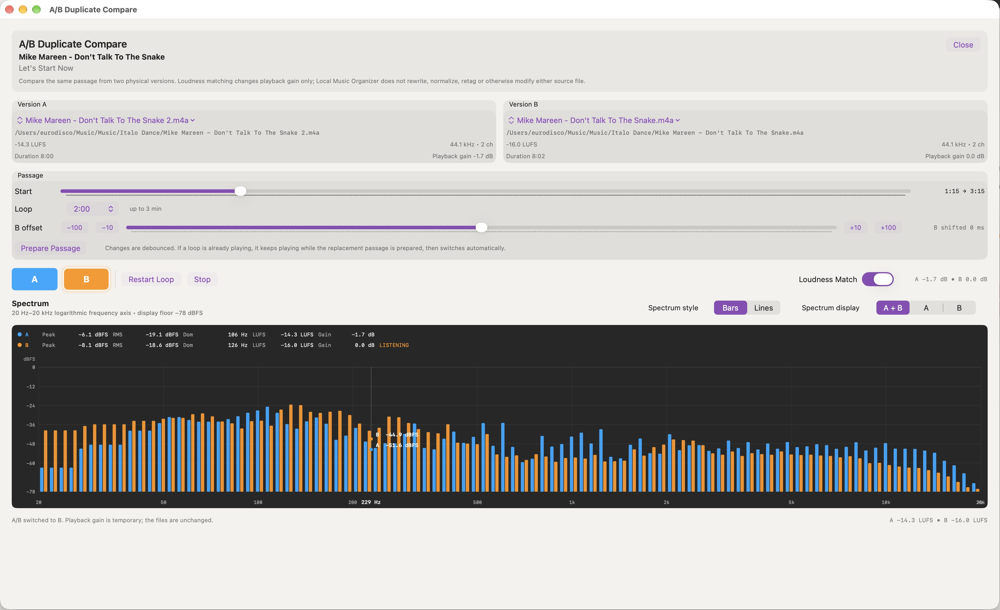

How to A/B compare two audio recordings on Mac
Two files with the same song title may contain different masterings, edits or transfers. Instead of deciding from file size or sample rate, you can listen to the same section of both recordings and switch between them while playback continues.
Open the comparison window
In Local Music Organizer, use Quality Duplicates to find candidate versions in the selected playlist data. Review a group with two different physical files, then open A/B Duplicate Compare. The separate window shows Version A and Version B, their file paths and technical details.
Compare the same passage
- Use Start to choose where the comparison begins and Loop to set its length. A loop can run from 5 seconds to 3 minutes, provided the passage fits in both files.
- If the recordings have different lead-ins, adjust B offset to align Version B with A. The offset affects comparison playback only; it does not edit either recording.
- Use Prepare Passage if needed, then Play Loop. Switch between A and B while listening. The A and B keyboard shortcuts work as well.
- Turn on Loudness Match when level differences make it hard to compare the sound. This applies temporary playback gain without changing the files.
Read the spectrum alongside what you hear
The live spectrum offers Bars and Lines views, with A + B, A or B displayed. Peak, RMS, LUFS and Gain give additional context. The LISTENING indicator shows which version is currently audible.
The spectrum can show a measurable difference, but it cannot tell you whether one mastering or mix is artistically better. Listen to more than one passage if the versions differ in their edits or arrangement. A/B comparison is playback-only: it does not rewrite, normalize, retag or move either source file, nor does it change Music.app records. Cleanup actions are separate.
The Quality Duplicates and A/B Compare documentation explains the remaining controls, including the offset and spectrum display options.

A/B Duplicate Compare keeps the playback controls and live measurements in one window.